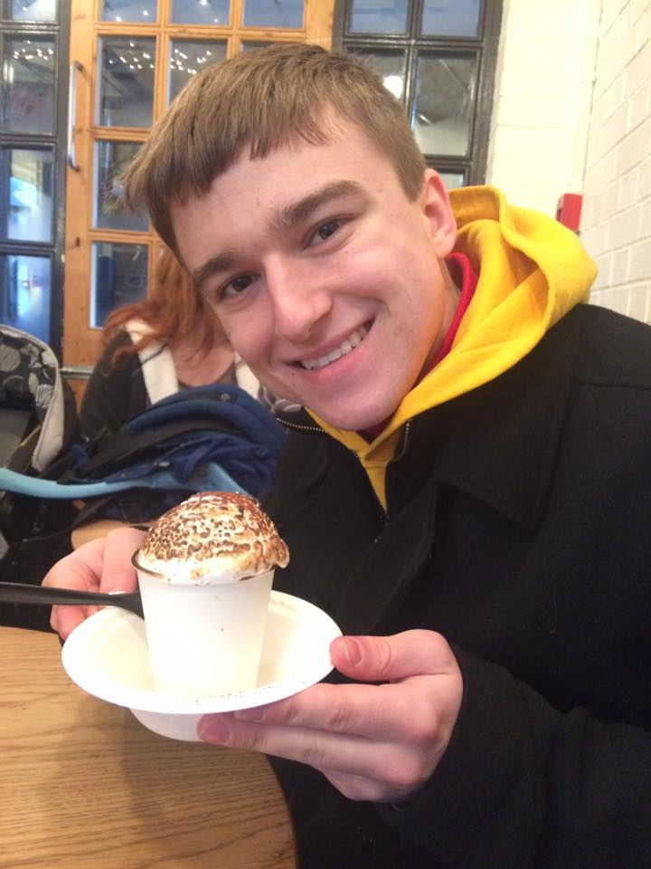

^me with some delicious hot cocoa, January 2017
I grew up in the suburbs of Boston. I started my studies at Tufts in the fall of 2015, and have been pursuing majors in computer science and physics. I love to code, and I have a passion for designing and implementing web apps. I love fantasy and sci-fi, especially the works of R.A. Salvatore, Timothy Zahn, and George R. R. Martin. I also love sprawling open-world RPG's and weird indie games with cute graphics. I intend to graduate in the spring of 2019, with fanfare and a job.
nathan@allenhub.com
To show my full resume, click here
Tufts University, Medford, MA
Bachelor of Science in Computer Science, Bachelor of Arts in Physics: May 2019
GPA: 3.28
Spring 2017:
This program finds all words of length greater than or equal to 3 on a given 4X4 Boggle board and prints them out to the terminal. It also provides the only way for a Computer Science major to beat a Linguistics major at Boggle.
Code snippets and more to come.
To visit the full project, click here
This is a simple text-based game that follows a young knight in his quest to fight in and win the tournament for King Eorland's birthday. Will you lead your hero to victory? Or go home, broken and defeated?
Code snippets and more to come.
This web app was designed to data mine
information from Dewick-MacPhie's online menu and design a set
of meals for the day, providing all necessary nutrients while
balancing caloric intake.
This project was completed during
Tuft's 2016 Polyhack.
Code snippets and more to come.
To visit the full project, click here